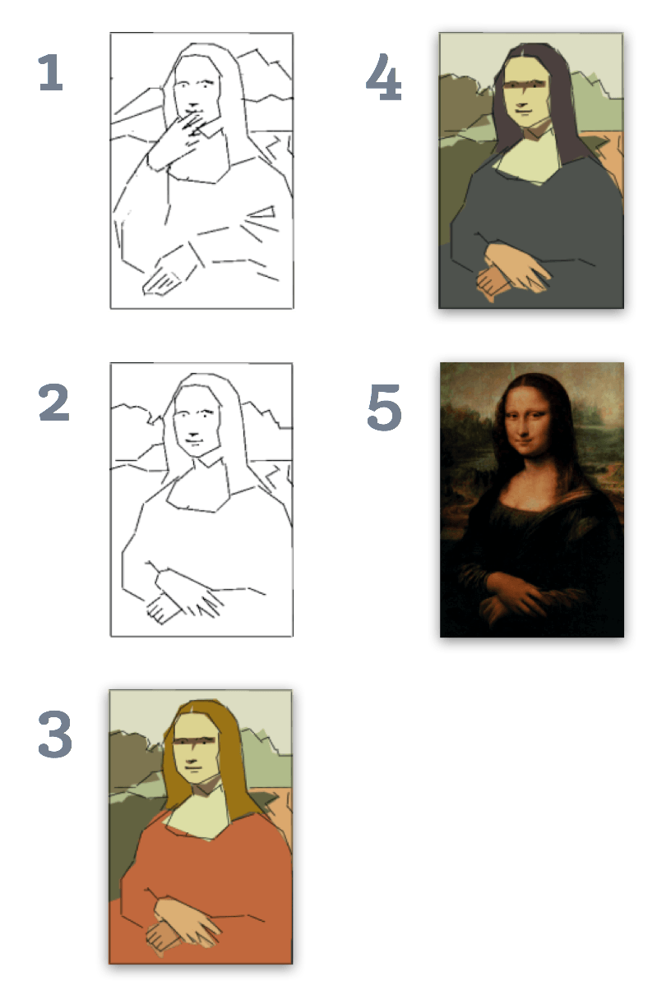
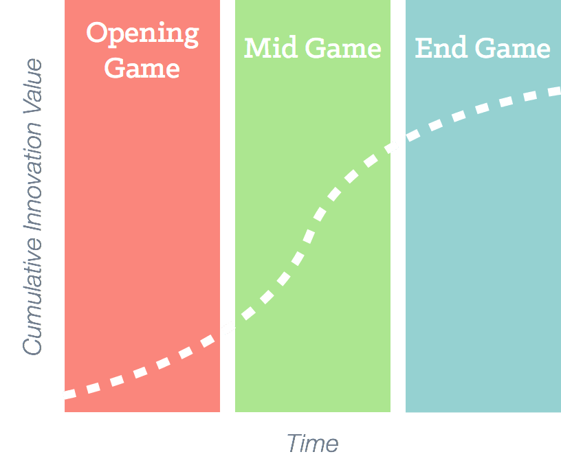

Want to talk? Email us at info@innovationatl.com We get an overwhelming amount of email, but we do read it all. We can't reply to everything, but we will do our best to help you or redirect you to someone we trust.
Menu
Build to Suit
From Idea to Execution
Many times the biggest blockers of innovation are internal departments like IT, Purchasing, and Legal that too often lack enough resources to adequately support your innovation initiative. Our Build-To-Suit services take you from Idea to Execution in 90 days.
The Problem
Many corporate IT departments have so many initiatives on their plate that they can’t deploy their scarce software development resources until all of the requirements, use cases, and end users are thoroughly defined. Unfortunately, this incremental approach requires a fully formed idea. And, doing it on time, requires deadly accurate estimation. This approach takes time – months and years – where innovation speed matters.
The Solution

We use the Agile Methodology to build a rough version, validate it, then build up more functionality. This iterative innovation approach allows you to move from a vague idea to execution making course corrections as you go. Our development team releases a “shippable” product every two weeks.
It’s up to you to decide when we’ve gone far enough. For example, you may decide release #3 is close, but release #4 allows you to test all of your operating assumptions necessary for a “Go” or “No Go” decision.
Benefits

Opening Game - Early stories emphasize iteration and learning. We need to be sure we’re building the right product
Mid Game - Once we’re confident we have the “shape” of the product right, we begin to pile in value
End Game - Over time the value of stories begin to diminish signaling it’s time for release
The release of innovation value over time lets you confirm that you’re on the right track during the “Opening Game.” Once the foundation is established, it’s time to pile on the functionality and end user value. You are able to finish on time and on budget by deferring functionality of modest value.
Build Or Buy?
Most companies want to “Buy” innovation rather than “Build.”
Our Build-To-Suit services give you the best of both worlds – we’ll buy SaaS platform capabilities, then “Build” the capabilities you need to launch your innovation.
After we’ve successfully tested the innovation with consumers, we’ll turn over our finished product to your IT team to re-engineer our solution to be compatible with your legacy architecture, maintenance, and governance requirements.